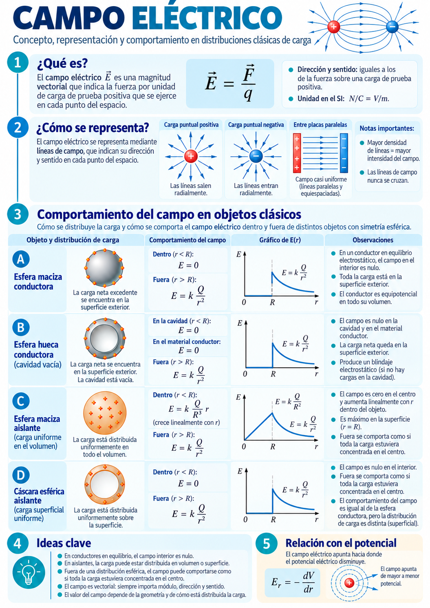
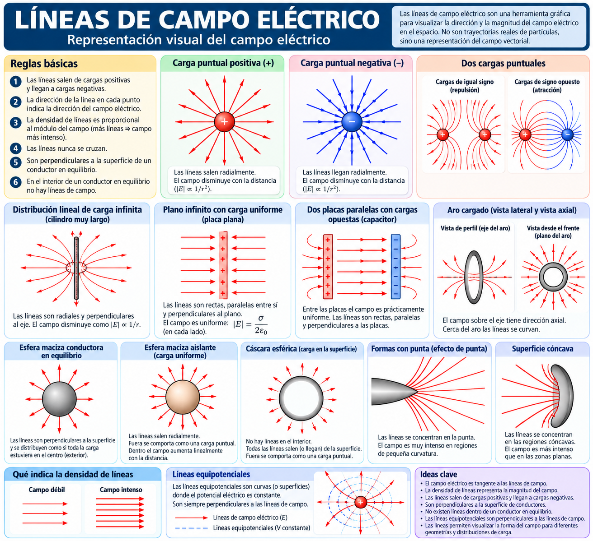
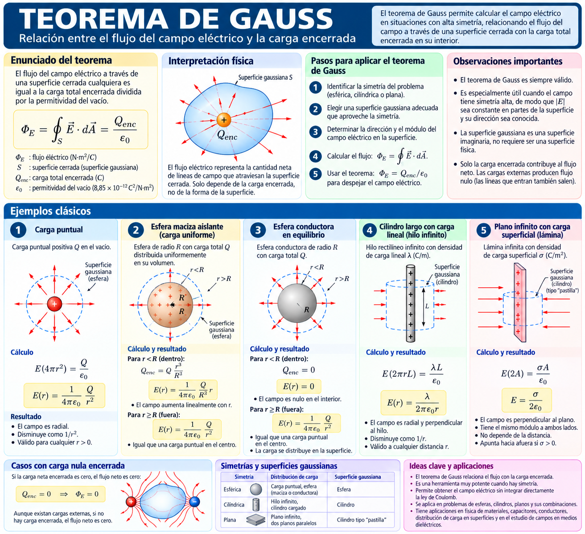
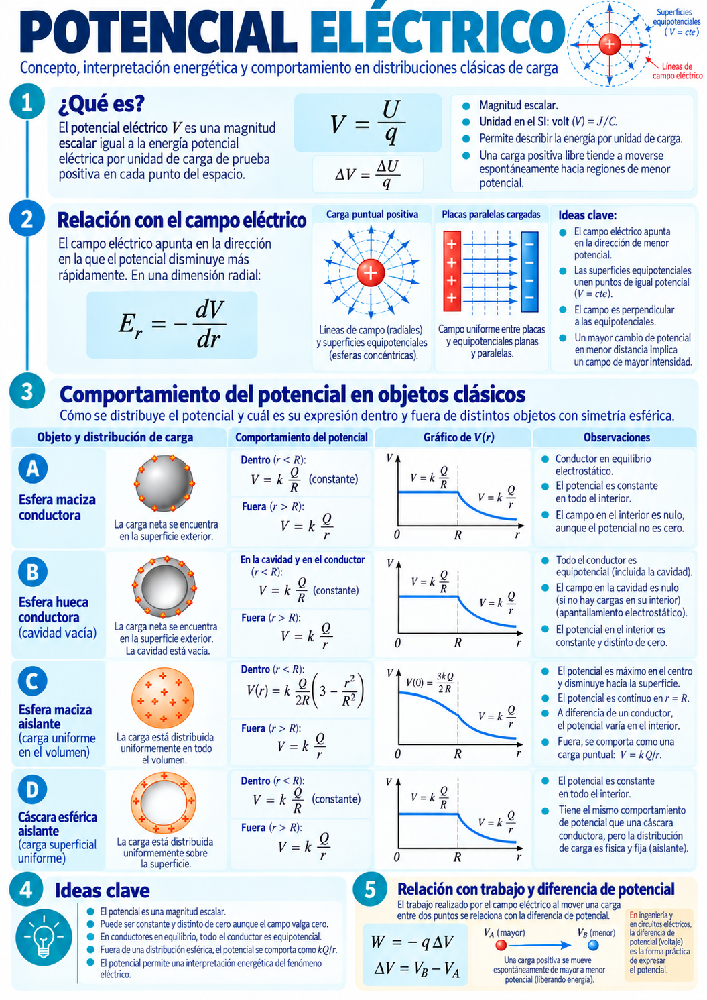
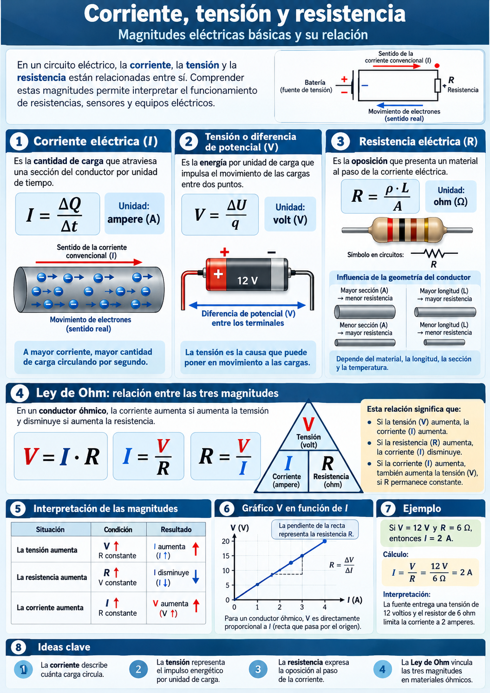

Antigüedad
Ámbar e imanes
Se observan la atracción de pequeños objetos por ámbar frotado y las propiedades de piedras imantadas. Son observaciones, no todavía una teoría del campo.
Apunte interactivo ampliado — Campo y electrostática, potencial eléctrico, corriente y ley de Ohm, con simulaciones, ejemplos y guiones narrados editables.
Guion pensado para lectura oral, incluyendo las ecuaciones pronunciadas con palabras. Podés modificarlo, guardarlo localmente y exportarlo como JSON.
En una planta alimentaria, la electricidad no es solo una fuente de energía: permite alimentar motores, aportar calor, medir variables y transmitir información para controlar procesos.
Un agitador convierte energía eléctrica en movimiento; una resistencia calefactora la transforma en energía interna; una sonda de temperatura entrega una señal eléctrica que puede procesarse en un sistema de control. Comprender estos fenómenos requiere distinguir cargas, fuerzas, campos, potencial, corriente y energía.
En una planta elaboradora, la electricidad cumple funciones distintas que conviene no confundir: suministra energía a motores y resistencias calefactoras, transmite información desde sensores y permite ejecutar órdenes por medio de dispositivos de control. En el primer caso interesa cuantificar potencia, energía y rendimiento; en el segundo interesa cómo una variable física se transforma en una señal interpretable.
Para estudiar estos procesos utilizaremos diferentes niveles de representación. En el modelo microscópico describiremos las cargas y sus interacciones; en el modelo de circuito reemplazaremos un equipo real por fuentes, resistencias y conductores ideales; y en el modelo industrial identificaremos alimentación, sensores, actuadores y protecciones. El paso entre modelos debe ser explícito: ninguno representa por sí solo todos los detalles del sistema.
Por ejemplo, para analizar la resistencia calefactora de un tanque primero identificamos su función energética, luego calculamos la corriente y la potencia mediante un circuito y finalmente vinculamos la energía entregada con el calentamiento del producto, teniendo en cuenta las pérdidas al ambiente. Esta forma de trabajo recupera la metodología física de definir el sistema, formular hipótesis y comprobar el resultado.
Al finalizar, el estudiante debería poder: definir campo escalar y vectorial; distinguir campo de fuerza; explicar la conservación de la carga; aplicar la ley de Coulomb a dos cargas puntuales; e interpretar dirección y módulo del campo eléctrico.
Los sistemas eléctricos de una planta pueden cumplir funciones diferentes: accionamiento de motores, calentamiento por efecto Joule, medición de temperatura o conductividad y automatización del proceso. Un mismo equipo puede reunirlas. La electricidad debe analizarse simultáneamente como fenómeno físico y como tecnología de medición y transformación de energía.
Un sensor no necesariamente entrega potencia para accionar una carga: generalmente produce o modifica una señal que debe acondicionarse. Por eso distinguimos el circuito de potencia del circuito de señal.
Guion de lectura oral, revisado para pronunciar las relaciones físicas con palabras.
La teoría electromagnética no surgió de una única experiencia. Se construyó a partir de observaciones, instrumentos, mediciones y modelos que permitieron pasar de la electricidad estática a los circuitos, los campos y la inducción.
Se observan la atracción de pequeños objetos por ámbar frotado y las propiedades de piedras imantadas. Son observaciones, no todavía una teoría del campo.
Publica De Magnete; distingue fenómenos eléctricos y magnéticos y estudia la Tierra como imán.
Se desarrollan dispositivos capaces de acumular carga eléctrica, antecedentes del capacitor y de los experimentos de descarga.
Cuantifica mediante una balanza de torsión la fuerza electrostática entre cuerpos cargados.
La pila posibilita disponer de una corriente sostenida y abre el estudio experimental de circuitos.
Ørsted observa la desviación de una brújula por una corriente; Ampère investiga interacciones entre conductores recorridos por corriente.
Publica una relación cuantitativa entre tensión y corriente en conductores, bajo condiciones definidas.
Demuestra la inducción electromagnética: una variación del flujo magnético puede producir fuerza electromotriz.
Desarrolla reglas para analizar corrientes en uniones y diferencias de potencial a lo largo de circuitos.
Unifica resultados de electricidad y magnetismo en una teoría de campos y predice la propagación de ondas electromagnéticas.
Genera y detecta ondas electromagnéticas, confirmando experimentalmente una predicción crucial de la teoría.
Las primeras experiencias permitieron reconocer electrización y magnetismo. Los instrumentos de almacenamiento de carga y medición de fuerzas hicieron posibles resultados cuantitativos. La pila de Volta posibilitó experimentos con corriente sostenida; Ørsted y Ampère revelaron su vínculo con el magnetismo. Faraday introdujo una visión de campos e inducción; Maxwell formuló una síntesis matemática, y Hertz proporcionó una verificación experimental de ondas electromagnéticas.
Conexión con esta unidad: Coulomb fundamenta la fuerza eléctrica; Volta, Ohm y Kirchhoff permiten estudiar los circuitos; Ørsted y Ampère, el campo magnético; Faraday y Maxwell, la inducción y la unidad del electromagnetismo.
La cronología resume hitos didácticos, no una atribución exclusiva de todos los descubrimientos. Referencias de contraste: Oxford Physics, Royal Institution, Florida State University (Magnet Academy) y Universidad de Buenos Aires.
Guion pensado para lectura oral, incluyendo las ecuaciones pronunciadas con palabras. Podés modificarlo, guardarlo localmente y exportarlo como JSON.
Un campo físico no es necesariamente una sustancia que llene el espacio. Es una forma de representar matemáticamente el estado físico de cada punto de una región. Un campo escalar asigna un número a cada posición —por ejemplo, la temperatura en el interior de una cámara de refrigeración—; un campo vectorial asigna un vector, como la velocidad del fluido en una tubería o la aceleración gravitatoria.
La distinción es importante porque una flecha no indica solamente «hacia dónde ocurre algo»: también tiene un módulo que puede variar con la posición. En un mapa de temperatura pueden dibujarse curvas de igual valor; en un campo vectorial, en cambio, es habitual representar flechas o líneas tangentes al vector local. La separación entre líneas es una convención gráfica útil, no una cantidad de líneas que exista materialmente.
En las proximidades de la superficie terrestre y para alturas pequeñas respecto del radio terrestre se puede aproximar el campo gravitatorio como uniforme. Por ello la fuerza peso es aproximadamente proporcional a la masa. Esta analogía será la puerta de entrada al campo eléctrico: las cargas fuente determinan el campo y una carga de prueba responde a él. Si varias fuentes actúan simultáneamente, sus campos se suman vectorialmente punto a punto.
Un cuerpo cae aun cuando no existe contacto material con la Tierra durante su descenso. Del mismo modo, dos cuerpos electrizados pueden atraerse o repelerse sin tocarse. El concepto de campo permite describir la influencia física en cada punto del espacio.
Asigna un número con unidad a cada punto: T(x,y,z). Ejemplo: la temperatura dentro de una cámara de conservación. Una superficie isotérmica conecta puntos de igual temperatura.
Asigna un vector a cada punto: g(x,y,z). El vector posee módulo, dirección y sentido. Ejemplo: campo gravitatorio o velocidad local del aire en una instalación.
Definimos el campo gravitatorio mediante la fuerza por unidad de masa de prueba:
Cerca de la superficie terrestre puede aproximarse como uniforme: , si el eje y es vertical hacia arriba. La unidad N/kg es equivalente a m/s².
La Tierra establece el campo; la masa de prueba experimenta una fuerza al situarse allí. Cambiar la masa de prueba cambia la fuerza, pero no el campo producido por la Tierra, en la aproximación de prueba.
Se representan vectores en una grilla espacial de tres dimensiones, proyectados en la pantalla. Arrastrá la figura para girar el punto de vista. El modo gravitatorio usa un modelo radial de una masa esférica; el modo eléctrico utiliza una carga puntual; el modo dipolo utiliza dos cargas opuestas.
Modelo didáctico: longitudes, intensidades y tamaño de flechas se escalan para facilitar la visualización. No representa una medición real ni líneas materiales en el espacio. La fuente negativa en el modo gravitatorio se toma en valor absoluto (la masa física no es negativa).
Las líneas de campo son curvas cuya tangente, en cada punto, indica la dirección del vector campo. La mayor proximidad de líneas puede utilizarse convencionalmente para indicar mayor intensidad. No son trayectorias que una partícula deba seguir necesariamente.
Cuando actúan varias fuentes, el campo resultante es la suma vectorial de sus contribuciones, en los regímenes lineales estudiados:
La magnitud de un campo vectorial se expresa mediante el tamaño de la flecha o un código de color; la orientación muestra su dirección y la punta indica el sentido. En un dibujo de líneas de campo, su densidad cualitativa representa la intensidad, siempre que la convención de trazado sea uniforme. Las líneas no son objetos materiales.
En un campo gravitatorio generado por una masa esférica aislada, fuera de la fuente, los vectores apuntan al centro. En las proximidades de la superficie terrestre y en regiones pequeñas, el campo puede aproximarse como uniforme. Ambos modelos describen la misma interacción a escalas diferentes.
Cuando varias fuentes producen el mismo tipo de campo, el campo resultante es la suma vectorial de las contribuciones individuales. En general, sumar módulos no da el valor correcto porque las direcciones pueden ser distintas.
Guion pensado para lectura oral, incluyendo las ecuaciones pronunciadas con palabras. Podés modificarlo, guardarlo localmente y exportarlo como JSON.
La carga eléctrica es una propiedad de la materia asociada a las interacciones electromagnéticas. Se distinguen cargas positivas y negativas: las de igual signo se repelen y las de signo opuesto se atraen. La unidad SI es el coulomb (C).
En la materia ordinaria, los protones poseen carga positiva y los electrones negativa, de igual magnitud elemental:
La relación q = ne expresa la cuantización de la carga neta de un cuerpo, con n entero (positivo, negativo o nulo). Un cuerpo macroscópico normalmente contiene enormes cantidades de cargas de ambos signos.
La materia está formada por átomos que contienen protones con carga positiva y electrones con carga negativa. En un cuerpo globalmente neutro ambas contribuciones se compensan. Electrizar un cuerpo no significa crear cargas: significa modificar el balance de carga de una región, usualmente mediante transferencia de electrones entre materiales.
La carga es una propiedad conservada en un sistema aislado. Si dos cuerpos se frotan y uno adquiere carga negativa, el otro habrá perdido una cantidad correspondiente de electrones; la carga total del conjunto se mantiene. La unidad del Sistema Internacional es el coulomb, una cantidad muy grande frente a la carga elemental, de modo que en electrostática son habituales los microcoulomb y nanocoulomb.
Un conductor dispone de portadores que pueden redistribuirse con relativa facilidad; un aislante dificulta la circulación de carga, aunque puede polarizarse. La polarización no exige que un objeto adquiera carga neta: puede consistir en un desplazamiento microscópico de cargas positivas y negativas. Por ese motivo un cuerpo neutro puede ser atraído por uno cargado. Esta diferencia resulta decisiva al interpretar la inducción electrostática y los materiales dieléctricos.
En un sistema eléctricamente aislado, la suma algebraica de las cargas se conserva. La electrización redistribuye cargas; no crea carga neta de la nada.
Frotamiento: transferencia de electrones entre materiales. Contacto: transferencia de carga por conducción. Inducción: redistribución de cargas causada por la presencia de una fuente próxima; una carga neta permanente por inducción requiere además un mecanismo de intercambio de carga, como conexión a tierra, y una secuencia adecuada.
Un material conductor es aquel que posee portadores de carga capaces de desplazarse con relativa facilidad dentro del material. En los metales, esos portadores son principalmente electrones libres. Por eso, si acercamos una carga o entregamos carga por contacto, en un conductor la redistribución es rápida y tiende a establecer un equilibrio electrostático.
Un material no conductor o aislante dificulta fuertemente el movimiento macroscópico de cargas. Eso no significa que no pueda interactuar con el campo eléctrico: puede polarizarse, es decir, deformar ligeramente la distribución interna de cargas positivas y negativas. En un aislante, la carga depositada suele permanecer más localizada y su redistribución global es mucho menor que en un conductor.
La materia contiene protones de carga positiva, electrones de carga negativa y neutrones sin carga neta. En un cuerpo macroscópicamente neutro, el número total de cargas positivas y negativas se compensa. Electrizar un cuerpo generalmente implica transferir electrones; no significa crear carga de la nada.
El valor de n es un entero con signo y e representa el módulo de la carga elemental. La carga eléctrica se mide en coulomb, símbolo C. Una carga de un microcoulomb equivale a una millonésima de coulomb.
La electrización puede producirse por frotamiento, contacto o inducción. En un conductor existen portadores capaces de redistribuirse; en un aislante las cargas están más restringidas, aunque puede producirse polarización. Las condiciones ambientales, especialmente la humedad, modifican la acumulación y disipación de electricidad estática.
Para interpretar la distribución de carga debemos diferenciar el material y la geometría. En un conductor aislado y en equilibrio electrostático, las cargas libres se redistribuyen hasta que el campo dentro del metal es cero. La carga neta excedente reside en la superficie exterior cuando la cavidad está vacía. En un aislante las cargas no se redistribuyen libremente; su ubicación depende de cómo se haya cargado el cuerpo. Por eso, una distribución homogénea en el volumen es una hipótesis explícita, no una propiedad de todos los aislantes.
Carga neta sobre superficie externa; interior metálico sin campo electrostático.
Sin cargas dentro de la cavidad: carga neta en superficie exterior; cavidad sin campo.
En el modelo de carga volumétrica uniforme, la carga ocupa todo el volumen.
En el modelo de cáscara delgada uniformemente cargada, la carga está sobre la superficie.
En el apartado 5 ter compararemos también campo y potencial de los cuatro modelos.
Guion de lectura oral, revisado para pronunciar las relaciones físicas con palabras.
El electroscopio de hojas detecta la presencia de carga eléctrica a través de un efecto mecánico observable: dos hojas conductoras livianas se separan cuando sobre ellas se distribuyen cargas del mismo signo.
Una esfera terminal, una varilla y dos hojas metálicas forman un solo conductor. La envolvente transparente protege las hojas del aire y de contactos accidentales. En un electroscopio inicialmente neutro, aproximar un cuerpo cargado redistribuye las cargas sin transferir necesariamente carga neta; el contacto, en cambio, puede transferirla. Al conectar a tierra se posibilita el intercambio de cargas con el entorno.
¿Por qué se abren las hojas? Cuando ambas hojas adquieren carga del mismo signo, se repelen. A medida que se separan cambia tanto la fuerza electrostática como la geometría, hasta equilibrarse con el peso y las restricciones mecánicas. La apertura no permite deducir directamente la carga absoluta sin una calibración del instrumento.
Estado neutro.
Modelo idealizado: la inducción es una redistribución; la carga neta solo cambia por contacto o conexión a tierra. Los valores y la apertura no constituyen una calibración real.
Curva estimada de equilibrio angular en un modelo de dos hojas idénticas; el punto marca el estado actual.
Si idealizamos cada hoja como una masa puntual situada a distancia L del eje, con una fracción fija de la carga neta en cada hoja y separación horizontal de 2 L sen θ, el equilibrio horizontal conduce a:
En esta expresión θ es el ángulo de cada hoja con la vertical, por lo que la separación angular total es aproximadamente 2θ; qh es la carga supuesta en cada hoja. El modelo no describe exactamente la redistribución continua sobre hojas reales ni la rigidez de sus articulaciones. Se emplea solo para mostrar por qué el ángulo crece con el módulo de la carga.
Guion pensado para lectura oral, incluyendo las ecuaciones pronunciadas con palabras. Podés modificarlo, guardarlo localmente y exportarlo como JSON.
Para dos cargas puntuales en reposo, separadas una distancia r en el vacío, el módulo de la fuerza eléctrica es:
La fuerza actúa a lo largo de la recta que une las cargas. Para signos iguales es repulsiva; para signos opuestos es atractiva. Las fuerzas mutuas tienen igual módulo y sentidos opuestos, por la tercera ley de Newton.
Ejemplo guiado. Para q₁ = +2 μC, q₂ = −3 μC y r = 0,30 m, se tiene:
La interacción es atractiva, porque los signos son opuestos. Si la distancia se duplica manteniendo las cargas, la fuerza se reduce a una cuarta parte.
La ley de Coulomb cuantifica la interacción electrostática entre dos cargas que pueden modelarse como puntuales, separadas una distancia mucho mayor que sus dimensiones características. La magnitud de la fuerza aumenta con el producto de los valores absolutos de las cargas y disminuye con el cuadrado de la separación. Duplicar la distancia reduce la magnitud a la cuarta parte; duplicar una carga la duplica.
La fórmula escalar informa el módulo, pero no debe reemplazar el análisis vectorial. Dos cargas del mismo signo se repelen y dos de signos opuestos se atraen. Las fuerzas que se ejercen mutuamente forman un par de acción y reacción: tienen igual módulo y sentidos opuestos, pero actúan sobre cuerpos distintos y por ello no se cancelan en el diagrama de fuerzas de una sola carga.
Al resolver un problema se recomienda: dibujar las posiciones de las cargas; determinar el sentido de cada fuerza antes de calcular; expresar todas las magnitudes en coulomb y metro; aplicar la ley; y finalmente sumar vectorialmente si intervienen varias cargas. En un medio material el valor de la permitividad puede diferir del vacío, por lo que el modelo elemental debe indicar el medio supuesto.
La ley de Coulomb describe la interacción electrostática entre cargas puntuales en reposo. También es una aproximación útil para cuerpos cargados de dimensiones pequeñas respecto de su separación. En el vacío, la constante electrostática vale aproximadamente 8,99 × 109 newton metro cuadrado por coulomb cuadrado.
La fuerza eléctrica es vectorial: actúa a lo largo de la recta que une las cargas. El signo del producto de las cargas permite decidir si hay atracción o repulsión; el valor absoluto determina el módulo.
Sistema: dos cargas puntuales en reposo en el vacío, q₁ = +2,0 μC y q₂ = −3,0 μC, separadas 0,30 m. Hipótesis: dimensiones despreciables, separación fija y ausencia de otras cargas. Interacción: atracción mutua. Modelo: ley de Coulomb.
Resultado: cada carga experimenta una fuerza de 0,60 N dirigida hacia la otra. Si la distancia se duplica, el módulo se reduce a la cuarta parte.
Guion pensado para lectura oral, incluyendo las ecuaciones pronunciadas con palabras. Podés modificarlo, guardarlo localmente y exportarlo como JSON.
El campo eléctrico permite describir la acción de las cargas fuente sobre el espacio, antes de colocar otra carga en él. Para interpretarlo, hay que separar la fuente del campo de la carga de prueba.

En lugar de preguntar directamente qué fuerza hace una carga sobre otra, podemos calcular primero qué campo eléctrico produce la carga fuente en cada punto. Así separamos el efecto de la fuente de la respuesta de la carga que luego colocamos allí. La definición mediante una carga de prueba positiva, suficientemente pequeña para no perturbar apreciablemente la distribución fuente, fija el sentido del campo.
El campo es una magnitud vectorial medida en newton por coulomb. La fuerza sobre una carga positiva tiene el mismo sentido que el campo, mientras que sobre una carga negativa tiene el sentido opuesto. Esto explica por qué los diagramas de líneas de campo no deben interpretarse automáticamente como la trayectoria de un electrón. La trayectoria también depende de la velocidad inicial y de otras fuerzas.
Para una carga puntual aislada el campo es radial: sale de la carga positiva y se dirige hacia la negativa. Su intensidad disminuye al aumentar la distancia. En presencia de varias fuentes no se suman directamente los módulos: se calculan los vectores correspondientes y se combinan por componentes. En un punto de cancelación el campo resultante es cero, aunque cada fuente individual siga produciendo un campo distinto de cero.
Importante: el campo eléctrico no depende del signo de la carga de prueba. Una prueba negativa experimenta fuerza en el sentido opuesto a E. La unidad del campo es N/C, equivalente a V/m, relación que estudiaremos al introducir el potencial eléctrico.
Hipótesis: carga fuente puntual; régimen electrostático; vacío; perturbación despreciable de la fuente por la carga de prueba.
El campo vale 8,99 × 10⁵ N/C y apunta radialmente hacia afuera de la carga fuente. La fuerza sobre la prueba negativa tiene módulo 8,99 × 10⁻⁴ N y apunta hacia la fuente: F = |q| E. Es decir, la fuerza resulta opuesta a la dirección del campo.
Las líneas de campo son curvas imaginarias cuya tangente en cada punto indica la dirección del vector campo eléctrico. El sentido se establece mediante una carga de prueba positiva: las líneas salen de las cargas positivas y entran en las negativas. La mayor densidad de líneas dibujadas indica convencionalmente una mayor intensidad del campo, pero la cantidad exacta de líneas es una elección de la representación.
Las líneas no se cruzan, porque en un punto donde el campo no es nulo solo puede tener una dirección. Cerca de un conductor en equilibrio electrostático, las líneas del campo inmediatamente exteriores son perpendiculares a su superficie; una componente tangencial produciría movimiento de cargas. Estas líneas no son las trayectorias necesarias de los electrones, que también dependen de su velocidad inicial y de las demás fuerzas.

Guion específico para lectura automática, incluidas fórmulas pronunciadas en palabras. Se puede editar y exportar junto a los demás guiones.
En la sección 5 estudiamos cómo las cargas producen un campo eléctrico. Ahora vamos a determinarlo para una distribución continua de carga utilizando simetría y la ley de Gauss. Este caso también anticipa la relación entre campo y potencial de la sección 6.

El flujo eléctrico mide, con signo, la contribución del campo que atraviesa una superficie orientada. Para comprenderlo, imaginemos una superficie cerrada formada por numerosos elementos pequeños: cada elemento aporta según la componente del campo normal a su superficie. Cuando el campo entra, el aporte es negativo respecto de la normal exterior; cuando sale, es positivo.
La ley de Gauss afirma que el flujo neto a través de cualquier superficie cerrada está determinado por la carga neta encerrada. Su utilidad para calcular el campo depende de la simetría. En una esfera aislante con densidad volumétrica uniforme, la simetría esférica permite escoger superficies gaussianas concéntricas donde el módulo del campo es constante y el vector campo es normal a la superficie.
En el interior de la esfera la carga encerrada crece con el volumen, proporcional al cubo del radio gaussiano, mientras que el área crece con su cuadrado; por eso el campo interior crece linealmente con la distancia al centro. Fuera de la esfera toda la carga está encerrada y el campo disminuye con el cuadrado de la distancia. Esto no describe una esfera conductora en equilibrio electrostático, donde la carga libre se distribuye en la superficie y el campo dentro del material conductor es nulo.
Consideramos una esfera maciza aislante de radio R y carga total Q, distribuida uniformemente en todo el volumen. El sistema está en reposo electrostático, en el vacío, y se supone que no existen otras cargas o campos externos. La distribución tiene simetría esférica: el campo es radial y su módulo depende solo de la distancia r al centro.
El flujo eléctrico mide cuánto campo atraviesa una superficie orientada. Para una superficie cerrada S, la ley de Gauss relaciona ese flujo con la carga neta encerrada:
ε₀ es la permitividad del vacío. Elegimos una esfera gaussiana imaginaria de radio r concéntrica con el cuerpo cargado. Debido a la simetría, E tiene igual módulo en toda esa superficie y es paralelo o antiparalelo al vector área saliente. Usando componentes radiales con signo, la integral se reduce a Er · 4πr² = Qenc/ε₀.
La densidad volumétrica uniforme vale ρ = Q / [(4/3)πR³]. Para una superficie gaussiana interior, solo queda encerrada la fracción de carga correspondiente al volumen de radio r:
El campo crece linealmente desde cero hasta la superficie.
Desde el exterior se obtiene el mismo campo que el de una carga puntual Q en el centro.
Para Q positiva, el campo radial apunta hacia afuera; para Q negativa, hacia adentro. Las expresiones anteriores dan la componente radial con signo, no un módulo siempre positivo. En r = R, los valores interior y exterior coinciden.
El potencial es una magnitud escalar y tomamos V(∞) = 0. En una distribución esférica, el campo radial y el potencial se relacionan por Er = −dV/dr. El potencial interior es cuadrático; el exterior disminuye como 1/r. Ambos son continuos en r = R.
En estas fórmulas k = 1/(4πε₀). La continuidad en la superficie no significa que las pendientes de ambas gráficas sean constantes: sus expresiones cambian al atravesar la frontera.
En la visualización, la esfera translúcida es el material cargado; la malla verde es una superficie matemática imaginaria. Ajustá la carga total, el radio físico y el radio gaussiano. Compará la densidad, la carga encerrada, el campo, el potencial y el flujo. Las curvas de campo y potencial deben interpretarse junto al modelo 3D.
Datos: Q = +5,0 nC; R = 10 cm; k ≈ 8,99 × 10⁹ N·m²/C². Evaluamos en r = 6,0 cm (interior) y r = 20 cm (exterior).
| Magnitud | Interior: r = 0,060 m | Exterior: r = 0,200 m |
|---|---|---|
| Carga encerrada | 5,0 nC × (0,6)³ = 1,08 nC | 5,0 nC |
| Campo eléctrico radial | k Q r/R³ = 2,70 × 10³ N/C | k Q/r² = 1,12 × 10³ N/C |
| Potencial eléctrico | (kQ/2R)[3 − (r/R)²] = 593 V | kQ/r = 225 V |
En la superficie, ambas expresiones del campo dan aproximadamente 4,49 × 10³ N/C. El máximo del campo se produce allí para esta distribución con Q positiva; en el centro, el campo es nulo aunque el potencial no lo sea.
Guion de lectura oral, revisado para pronunciar las relaciones físicas con palabras.
La forma geométrica no alcanza para determinar el campo: también debemos conocer si el material es conductor o aislante, y cómo se distribuye realmente la carga. Compararemos modelos esféricamente simétricos con carga total Q, radio exterior R y referencia V(∞)=0.
Un conductor en equilibrio electrostático permite que las cargas libres se redistribuyan hasta que el campo sea nulo en el material y su potencial sea constante. En cambio, en un aislante la carga puede permanecer fijada en un volumen o una superficie. Que el material sea aislante no garantiza por sí solo una distribución uniforme: esa hipótesis debe indicarse en el modelo.
Carga uniforme en todo el volumen: ρ=3Q/(4πR³). En el centro E=0; en el interior E crece linealmente con r.
La carga uniforme está sobre una superficie esférica delgada: σ=Q/(4πR²). El campo interior es nulo, pero V no es cero.
En equilibrio y sin otras cargas próximas, el exceso de carga reside uniformemente sobre la superficie externa; E=0 en el interior metálico.
Con cavidad vacía, sin carga interna y en equilibrio, la carga excedente está sobre la cara externa; el campo es cero en la cavidad y en el metal.
Definimos k=1/(4πε₀). Para la esfera aislante maciza con carga volumétrica uniforme, las expresiones son:
En cambio, para una cáscara esférica delgada con carga superficial uniforme, o para una esfera conductora maciza en equilibrio electrostático, el campo interior es nulo y el potencial interior es constante:
Guion oral independiente de las fórmulas visuales. Editá el texto, guardalo o exportalo en JSON.
La descripción energética de las interacciones eléctricas permite comprender por qué una fuente mantiene una tensión entre terminales.

El campo eléctrico describe la interacción mediante fuerzas; el potencial ofrece otra descripción, basada en energía. Definimos potencial eléctrico como energía potencial eléctrica por unidad de carga, para una referencia determinada. Por eso el potencial se mide en volt, equivalente a joule por coulomb. Un potencial de cinco volt no indica por sí solo cuánta energía tiene un sistema: para una carga dada, la energía depende también del valor y signo de esa carga.
Lo que normalmente se mide con un voltímetro es una diferencia de potencial entre dos puntos. Cambiar el nivel de referencia suma la misma constante a todos los potenciales, sin alterar sus diferencias. En un campo electrostático, el trabajo del campo sobre una carga entre dos puntos se relaciona con la disminución de su energía potencial; una carga negativa puede experimentar una fuerza opuesta al campo.
Entre placas paralelas grandes y suficientemente alejados de los bordes se aproxima el campo como uniforme. En esa situación la magnitud del campo se vincula con la diferencia de potencial y la separación entre placas. Esta relación es una aproximación geométrica, no una identidad universal para cualquier campo. Resulta útil para comprender aislamiento eléctrico, electrodos y el principio de funcionamiento de ciertos sensores capacitivos.
El campo eléctrico es vectorial y permite obtener la fuerza sobre una carga. El potencial eléctrico es escalar y representa la energía potencial eléctrica por unidad de carga. La diferencia de potencial cuantifica cuánto cambia esa energía por coulomb entre dos posiciones.
Unidad: un voltio equivale a un joule por coulomb, 1 V = 1 J/C. El trabajo efectuado por la fuerza electrostática cuando la carga va de A a B se expresa a continuación. Atención a los signos y a la dirección elegida.
En vacío, tomando cero en el infinito, el potencial creado por una carga puntual fuente Q a distancia r conserva el signo de Q. En un sistema de cargas se suman los potenciales algebraicamente, no como vectores.
Las equipotenciales son conjuntos de puntos con el mismo potencial. En electrostática, las líneas del campo son perpendiculares a esas superficies. Para placas paralelas ideales, lejos de los bordes:
Guion de lectura oral, revisado para pronunciar las relaciones físicas con palabras.
En un conductor cargado, la distribución superficial no es necesariamente uniforme: depende de la geometría y de los conductores cercanos. Una esfera aislada tiene simetría, pero un cuerpo con extremos agudos no.
Si en un conductor en reposo electrostático hubiera una componente tangencial del campo sobre su superficie, las cargas libres se moverían. La redistribución continúa hasta que el campo tangencial es cero y todos los puntos del conductor quedan al mismo potencial. Justo fuera de una superficie conductora ideal, en vacío, el campo normal cumple aproximadamente En=σ/ε₀, siempre que no se considere la superficie microscópica.
Los puntos rojos son una representación cualitativa de carga superficial, no posiciones de electrones ni una solución electrostática calculada. En una zona de menor radio de curvatura, frecuentemente aumenta la densidad superficial de carga y el campo normal cercano. Una punta muy aguda puede favorecer la ionización del aire y la aparición de corona o descargas.
Una envolvente conductora cerrada en equilibrio electrostático puede proteger su cavidad frente a campos electrostáticos exteriores. Esta es la base de la jaula de Faraday. No debe confundirse el blindaje electrostático ideal con una protección perfecta frente a campos variables de cualquier frecuencia: en esos casos intervienen aberturas, geometría y propiedades del material.
Guion oral independiente de las fórmulas visuales. Editá el texto, guardalo o exportalo en JSON.
La corriente describe transporte neto de carga a través de una sección. Comprender el sentido convencional es imprescindible para leer diagramas eléctricos.
La corriente eléctrica expresa la rapidez con que la carga atraviesa una sección elegida de un conductor. Para corriente constante se obtiene dividiendo la carga neta transferida por el intervalo de tiempo; una corriente de un ampere significa un coulomb por segundo. No implica que un electrón recorra un metro en un segundo: la propagación de la señal eléctrica y la velocidad media de deriva de los portadores son conceptos diferentes.
Por convenio, el sentido de la corriente coincide con el movimiento que tendrían cargas positivas. En los metales los electrones se desplazan en sentido opuesto. Este convenio no es un error histórico que deba corregirse: mantiene una descripción consistente para conductores metálicos, electrolitos y semiconductores, aunque cambie el tipo de portador.
Para mantener una corriente sostenida es necesaria una fuente o un mecanismo capaz de sostener una diferencia de potencial y un camino cerrado apropiado. La intensidad de corriente no se «gasta» al pasar por una resistencia; la resistencia disipa energía eléctrica y provoca una caída de tensión. En instrumentación, una señal de 4 a 20 miliamperes transporta información sobre una variable medida; su valor mínimo distinto de cero también permite identificar algunas condiciones de falla del lazo, según el sistema de diagnóstico empleado.
Si durante un intervalo Δt atraviesa una sección una carga neta ΔQ, la corriente media se define con un sentido de referencia elegido. El valor instantáneo se expresa como tasa de cambio de carga con el tiempo.
Unidades: 1 A = 1 C/s. Prefijos usuales: 1 mA = 0,001 A; 1 µA = 0,000001 A. El paso de una carga neta de 2 C durante 10 s equivale a una corriente media de 0,20 A.
Por convención, la corriente tiene el sentido en que se moverían cargas positivas. En conductores metálicos, los electrones (negativos) se desplazan en promedio en el sentido contrario. La señal electromagnética se propaga mucho más rápido que el movimiento de deriva de los electrones.
Una señal de 4–20 mA es frecuente en instrumentación industrial. El transmisor convierte la variable del proceso en una corriente dentro de ese intervalo según su calibración; la corriente actúa como señal, no como una medida directa de temperatura o presión.
Guion oral independiente de las fórmulas visuales. Editá el texto, guardalo o exportalo en JSON.
La resistencia cuantifica cómo un elemento limita la corriente cuando se aplica una diferencia de potencial; estudiaremos primero el resistor ideal.

La resistencia eléctrica cuantifica la oposición que presenta un componente al paso de corriente bajo determinadas condiciones. En un conductor uniforme de material homogéneo, su valor depende de la resistividad del material, de la longitud del recorrido y del área transversal. Un conductor más largo ofrece mayor resistencia, mientras que uno de mayor sección ofrece menor resistencia, manteniendo iguales las demás condiciones.
Para un elemento óhmico, a temperatura aproximadamente constante, tensión y corriente son proporcionales. La relación entre ambas define una resistencia constante y la gráfica de tensión frente a corriente es una recta que pasa por el origen. La ley de Ohm no obliga a que todos los dispositivos sean lineales: una lámpara incandescente, un diodo o una termorresistencia cuyo valor cambia con la temperatura pueden presentar curvas no lineales.
En un sensor Pt100 la variación de resistencia con la temperatura es precisamente la información que se desea medir. De allí que no se deba confundir la resistencia como propiedad de un componente con la resistividad como propiedad intrínseca del material, ni aplicar automáticamente un valor de resistencia constante cuando existe calentamiento importante.
La infografía debe leerse como una síntesis conceptual. Primero diferencia tres ideas: la corriente indica cuánta carga atraviesa una sección por unidad de tiempo, la tensión expresa la energía por unidad de carga disponible entre dos puntos y la resistencia describe la oposición que ofrece un material o componente al paso de la corriente. Luego integra esas tres magnitudes con la ley de Ohm, válida para un resistor óhmico ideal en condiciones aproximadamente constantes.
En la parte inferior se presenta la llamada rueda o triángulo de Ohm, útil como recurso mnemotécnico, pero que debe interpretarse con criterio físico: no reemplaza la comprensión del fenómeno. La tabla y el gráfico recuerdan que, para un elemento óhmico, la tensión es proporcional a la corriente y la pendiente de la recta representa la resistencia. La sección dedicada a la geometría muestra que la resistencia aumenta si el conductor es más largo y disminuye si la sección transversal es mayor, manteniéndose el mismo material.
Por su carácter integrador, esta lámina es importante para articular las secciones 7 y 8. No se limita a dar definiciones aisladas: muestra cómo la fuente, el conductor y la corriente quedan vinculados en un mismo modelo físico.
En un resistor óhmico ideal a temperatura constante, la tensión U entre sus terminales es proporcional a la corriente I. Para mantener los signos coherentes, se adopta la convención pasiva: la corriente positiva entra por el terminal de referencia positivo.
Unidades: 1 Ω = 1 V/A. En una gráfica de U en función de I, la pendiente de la recta representa R. Si en cambio representamos I en función de U, la pendiente es 1/R.
Para un conductor uniforme de sección A y longitud L, bajo condiciones en que el modelo sea aplicable, la resistencia depende de la resistividad ρ del material. Esta depende, entre otros factores, de la temperatura.
Modificá tensión de alimentación y resistencia ideal. Observá el punto de operación y la pendiente de la curva U versus I. El cálculo supone una fuente de tensión ideal y un resistor óhmico sin variación térmica.
Corriente: 2,00 A
Potencia disipada: 24,0 W
Narración de las fórmulas en lenguaje natural; editable y exportable a JSON.
La energía eléctrica puede convertirse en calor, movimiento o energía luminosa. La potencia expresa la rapidez de esa transformación.
La potencia eléctrica indica a qué ritmo se transfiere o transforma energía. La energía consumida durante un intervalo se calcula a partir de la potencia y el tiempo, siempre que se conozca cómo varía la potencia. Si permanece constante, la energía es igual al producto de potencia por duración. Una potencia elevada durante pocos segundos puede producir menos energía consumida que una potencia moderada mantenida durante horas.
Para una resistencia ideal se combinan la definición de potencia eléctrica y la ley de Ohm, obteniendo expresiones equivalentes en términos de tensión, corriente o resistencia. Sin embargo, estas expresiones describen el comportamiento eléctrico; no significan que toda la energía se incorpore necesariamente al alimento. Parte puede calentar la pared del recipiente o perderse hacia el ambiente.
Al estimar el calentamiento de un tanque conviene definir una frontera de sistema y realizar un balance energético. Primero se calcula la energía entregada eléctricamente y luego se estima qué fracción llega al producto. La unidad industrial kilowatt-hora mide energía, no potencia: un equipo de 2 kilowatts funcionando durante 3 horas consume 6 kilowatt-hora si opera a potencia constante.
En corriente continua y bajo la convención pasiva, la potencia absorbida por un elemento es el producto de la tensión entre sus terminales por la corriente que ingresa por el terminal positivo. Para resistores ideales, la ley de Ohm permite obtener expresiones equivalentes.
En unidades del Sistema Internacional: 1 W = 1 J/s. Si la corriente entra por el terminal negativo de referencia, la potencia obtenida con la convención pasiva es negativa: el elemento entrega energía al circuito.
Si la potencia permanece constante durante el intervalo de observación, la energía transferida es:
Narración de las fórmulas en lenguaje natural; editable y exportable a JSON.
Antes de aplicar leyes generales, resulta esencial reconocer cómo están conectados los componentes y qué magnitudes comparten.
Un circuito en serie posee un único camino para la corriente a través de los elementos que componen esa rama. Por eso la misma corriente atraviesa todos sus componentes, mientras que la tensión suministrada se reparte entre ellos. Si se interrumpe el único camino, deja de circular corriente por toda esa rama.
Dos resistencias están en paralelo si sus dos extremos se conectan a los mismos dos nodos: en ese caso tienen necesariamente la misma diferencia de potencial, pero sus corrientes pueden ser distintas. La corriente total se reparte entre las ramas y la resistencia equivalente de varias resistencias positivas en paralelo es menor que cualquiera de ellas.
En una red mixta no alcanza con observar que dos símbolos aparezcan «uno al lado del otro» o «uno arriba de otro» en el dibujo. Lo decisivo es la conectividad eléctrica. Por eso primero deben marcarse los nodos y luego identificarse los grupos reducibles. Una vez obtenida la resistencia equivalente, se regresa al circuito original para calcular la tensión y la corriente de cada elemento, sin perder la información de sus conexiones.
En serie los componentes atraviesan la misma corriente; en paralelo tienen la misma diferencia de potencial. En un circuito mixto conviven asociaciones de ambos tipos. Los puntos unidos por conductores ideales pertenecen a un mismo nodo.
Para dos resistencias en paralelo también puede utilizarse el producto dividido por la suma. La resistencia equivalente no identifica cómo se reparte la corriente en cada rama: esa distribución debe calcularse después.
Elegí una topología y modificá los valores. El modelo utiliza resistores ideales, una fuente ideal de corriente continua y conductores sin resistencia. En mixto, R₁ está en serie con R₂ y R₃ en paralelo.
Narración de las fórmulas en lenguaje natural; editable y exportable a JSON.
Las leyes de Kirchhoff permiten resolver redes que no se pueden reducir sencillamente a asociaciones serie/paralelo.
Las leyes de Kirchhoff no son reglas adicionales e independientes de la física: representan las leyes de conservación de carga y energía aplicadas al modelo de circuitos. En un nodo de una red que opera sin acumulación neta de carga, la suma de corrientes entrantes iguala la suma de corrientes salientes. Elegir todos los sentidos de corriente al comienzo es indispensable, aunque luego alguna incógnita resulte negativa.
Al recorrer una malla se registran aumentos y disminuciones de potencial. Una resistencia recorrida en el sentido de la corriente convencional representa una caída de potencial; una fuente atravesada del terminal negativo al positivo representa una elevación. Al volver al punto de partida, la suma algebraica es nula en el régimen de circuito concentrado habitual. Si existe un flujo magnético variable que enlaza la trayectoria, se requiere considerar la fuerza electromotriz inducida: la formulación elemental debe indicar su dominio de validez.
Para resolver varias mallas es práctico asignar una corriente imaginaria a cada una. En una resistencia compartida, la corriente física es la diferencia algebraica de las corrientes de malla definidas. Los signos finales no significan «corriente imposible»: un valor negativo informa que el sentido real es el opuesto al supuesto. La comprobación final consiste en verificar todas las ecuaciones de nodos y mallas con los valores calculados.
Ley de nodos (KCL): la suma algebraica de corrientes en un nodo es cero. Implica que, en régimen estacionario, la corriente total que entra iguala la que sale. Ley de mallas (KVL): la suma algebraica de cambios de potencial a lo largo de un circuito cerrado es cero bajo las hipótesis del modelo de circuitos concentrados; no se aplica sin consideración adicional a mallas atravesadas por flujos magnéticos variables.
Definir el sistema y sus hipótesis; identificar nodos, ramas y fuentes; dibujar el circuito con resistores y polaridades; escoger sentidos arbitrarios para las corrientes de malla; escribir las ecuaciones con signos coherentes; resolver el sistema y comprobar tensiones y corrientes.
Para la rama central, adoptando sentido hacia abajo, I₃ = I₁ − I₂. Por eso R₃ interviene en ambas ecuaciones con términos cruzados.
Modificá las fuentes y resistencias. Los valores se resuelven mediante un sistema lineal de dos ecuaciones. Se indican corrientes algebraicas: el signo tiene sentido físico.
El texto de narración explica las expresiones en lenguaje natural y puede exportarse a JSON.
El magnetismo está asociado a los imanes, a las corrientes eléctricas y a campos eléctricos variables. El campo magnético es un campo vectorial.
Un imán ejerce efectos sobre otros imanes y sobre determinados materiales. El concepto de campo magnético permite describir estas interacciones en cada punto del espacio. Además de los imanes permanentes, una corriente eléctrica genera campo magnético: alrededor de un conductor recto muy largo las líneas de campo forman circunferencias concéntricas, cuyo sentido se determina con la regla de la mano derecha.
El campo magnético es vectorial y se mide en tesla. Las líneas de campo son cerradas: no comienzan ni terminan en «cargas magnéticas» aisladas. En una bobina o solenoide, las contribuciones de las espiras se superponen; en el interior de un solenoide ideal suficientemente largo el campo puede aproximarse como uniforme, aunque cerca de sus extremos aparecen efectos de borde.
Al estudiar una bobina real debemos distinguir la representación geométrica de las líneas, el sentido del campo y su intensidad. Los electroimanes de relés, contactores y válvulas emplean precisamente la relación entre corriente y campo magnético. No obstante, la fuerza y el movimiento de sus partes también dependen de la geometría y de las propiedades del material magnético.
En un punto del espacio, el vector campo magnético B caracteriza la interacción magnética. Se mide en teslas (T). Los diagramas de líneas ayudan a reconocer la dirección: en cada punto, la tangente a una línea es paralela a B. Las líneas de campo magnético no son trayectorias de partículas ni corrientes materiales.
Una corriente constante que atraviesa un hilo rectilíneo muy largo crea líneas de campo circulares alrededor del conductor. El módulo, en el vacío y fuera del conductor idealizado, es:
Donde r es la distancia perpendicular al cable, I la corriente y μ₀ la permeabilidad magnética del vacío. La dirección se determina con la regla de la mano derecha: pulgar en el sentido de la corriente convencional y dedos curvados en el sentido del campo.
Vista frontal de un plano perpendicular al conductor. El símbolo ⊙ indica corriente saliente de la pantalla y ⊗, entrante.
Cuando una corriente recorre una bobina, los campos de sus espiras se superponen. Para un solenoide ideal suficientemente largo, el campo interior es aproximadamente uniforme:
N es el número de espiras y L la longitud de la bobina. Esta expresión no describe con precisión los bordes de un solenoide corto ni núcleos ferromagnéticos no lineales.
El texto de narración explica las expresiones en lenguaje natural y puede exportarse a JSON.
El campo magnético ejerce fuerzas sobre cargas en movimiento y sobre conductores recorridos por corriente.
Una carga eléctrica no experimenta una fuerza magnética por el mero hecho de tener carga. Debe moverse con una componente de velocidad perpendicular al campo magnético. La dirección de la fuerza es perpendicular tanto a la velocidad como al campo. Cuando la velocidad es paralela al campo, la fuerza magnética es nula; cuando es perpendicular, su módulo es máximo para valores fijos de carga, velocidad y campo.
La regla de la mano derecha proporciona el sentido del producto vectorial para una carga positiva; si la carga es negativa, la fuerza cambia de sentido. Como la fuerza magnética sobre una carga puntual es perpendicular a su velocidad instantánea, no realiza trabajo sobre ella: puede desviar su trayectoria, pero no modificar directamente su rapidez.
En un conductor con corriente, la fuerza magnética resulta de la acción conjunta sobre las cargas móviles. Este principio sustenta el funcionamiento de motores eléctricos, aunque un motor real requiere considerar simultáneamente campos, corrientes, geometría, torque y alimentación. En los ejemplos del apunte hay que distinguir explícitamente la fuerza sobre una partícula de la fuerza sobre un tramo de conductor.
La fuerza es perpendicular tanto a la velocidad como al campo. Es nula si la velocidad es paralela al campo o si la carga está en reposo. En un campo magnético puro, la fuerza no modifica la energía cinética de una partícula puntual: cambia la dirección de su velocidad.
Velocidad hacia +x; campo perpendicular a la pantalla. La flecha de fuerza corresponde a la carga elegida.
Para un segmento recto de longitud L atravesado por corriente I en un campo aproximadamente uniforme:
El texto de narración explica las expresiones en lenguaje natural y puede exportarse a JSON.
Un campo magnético variable puede producir una fuerza electromotriz: es el fundamento de generadores, transformadores y diversos sensores industriales.
La inducción electromagnética ocurre cuando cambia el flujo magnético enlazado con un circuito. Ese cambio puede producirse porque varía el campo, porque cambia el área de la espira, porque gira la espira o porque se modifica su orientación. Por lo tanto, no basta afirmar que «un imán induce corriente»: un imán inmóvil respecto de una bobina inmóvil, en condiciones estacionarias, no mantiene por sí solo una fuerza electromotriz inducida.
La ley de Faraday relaciona la fuerza electromotriz inducida con la rapidez de cambio del flujo enlazado. El signo negativo expresa la ley de Lenz: el sentido de la respuesta inducida se opone a la variación de flujo que la origina. Esta oposición no significa necesariamente que el campo inducido sea siempre contrario al campo existente, sino que se opone a su cambio.
Si el circuito está abierto puede haber tensión inducida sin corriente sostenida. Si está cerrado, circulará una corriente determinada además por la impedancia del circuito. Generadores, transformadores y sensores inductivos aplican variantes de este principio. En los equipos de proceso, comprenderlo permite distinguir sensores sin contacto de actuadores electromagnéticos.
Para un campo uniforme a través de una superficie plana, el flujo magnético depende del campo, del área y de la orientación de la superficie.
El ángulo θ se mide entre B y el vector normal a la superficie. El flujo se mide en weber (Wb). En campos no uniformes, el flujo requiere integrar sobre la superficie.
El signo negativo corresponde a la ley de Lenz: si el flujo externo aumenta, la respuesta inducida se orienta a oponerse a ese aumento; si disminuye, a oponerse a su disminución. Una fuerza electromotriz inducida no garantiza corriente: hace falta un circuito cerrado.
Modelo ideal: campo uniforme B(t)=B₀ sen(2πft), bobina fija, orientación perpendicular al campo; área constante. La curva muestra fem inducida, no corriente eléctrica.
El guion expresa las fórmulas en lenguaje oral y puede exportarse.
Un sistema de medición convierte una magnitud física del proceso en una indicación utilizable. En esta sección se distingue el sensor, el transmisor, la señal eléctrica y el sistema de adquisición o control.
Un sistema de instrumentación comienza con una magnitud del proceso —temperatura, presión, nivel o caudal— y termina con una indicación o una decisión de control. Entre ambos extremos intervienen una propiedad sensible, un transductor, acondicionamiento de señal, transmisión y adquisición. Llamar «sensor» a toda la cadena puede ocultar qué parte está realizando la conversión física y cuál está convirtiendo y comunicando la medición.
Una Pt100 es una termorresistencia de platino con resistencia nominal de 100 ohmios a cero grados Celsius. Para medirla, el instrumento hace circular una corriente de excitación y mide una tensión; si la corriente es excesiva, el autocalentamiento introduce error. La aproximación lineal sirve para una primera comprensión, pero para mediciones precisas deben utilizarse las relaciones y tolerancias pertinentes al sensor.
Una termocupla, en cambio, produce una tensión asociada a la diferencia de temperatura entre uniones y requiere compensación de unión fría. Un transmisor de 4 a 20 miliamperes convierte el valor medido a una corriente de lazo según un rango configurado; la resistencia de 250 ohmios permite convertir idealmente esa corriente en 1 a 5 voltios. Esta equivalencia no reemplaza la comprobación de alimentación, carga admisible, cableado y requisitos del equipo real.
El sensor responde a una variable —por ejemplo, temperatura, presión o nivel—. Un transmisor puede acondicionar la respuesta y convertirla en una señal analógica normalizada. El controlador interpreta la señal, la compara con una consigna y eventualmente actúa sobre el proceso. Medición y control son funciones relacionadas, pero distintas.
En un transmisor lineal ideal, 4 mA corresponde al límite inferior de escala y 20 mA al límite superior. Para una variable X comprendida entre Xmin y Xmax:
La ecuación inversa permite que el receptor reconstruya la variable medida. La representación supone un lazo correctamente alimentado, calibrado y operando dentro de su rango. Las corrientes fuera de escala pueden indicar condiciones de fallo según la configuración y las convenciones del equipo, no deben interpretarse automáticamente como una medida válida.
Modelo ideal lineal. Rango fijo de 0 a 150 °C; resistencia de lectura de 250 Ω. El circuito no representa caídas adicionales ni límites de tensión de cumplimiento del transmisor.
Una Pt100 es una termorresistencia de platino cuya resistencia nominal es 100 Ω a 0 °C. Su resistencia aumenta con la temperatura. Como aproximación lineal introductoria en un intervalo próximo a 0 °C:
Tomaremos R₀ = 100 Ω y α = 0,00385 °C⁻¹ para la aproximación. Para mediciones precisas se emplean las ecuaciones de calibración de la RTD y se consideran autocalentamiento y resistencia de cables. Las conexiones a tres o cuatro hilos permiten reducir errores introducidos por conductores.
Curva didáctica aproximada. No se presenta como tabla de calibración metrológica.
Además del rango y el principio de medición, deben considerarse resolución, exactitud, tiempo de respuesta, condiciones ambientales, compatibilidad higiénica, protección eléctrica y requisitos de instalación. Para procesos alimentarios importan especialmente la limpieza, los materiales en contacto y la ubicación del punto de medida.
Caso idealizado: tanque de procesamiento con sensor Pt100, transmisor de 4–20 mA configurado en 0–150 °C y un elemento calefactor resistivo alimentado a 230 V.
Antes de utilizar los controles del simulador, identifiquemos el sistema: tanque, producto, calentador, sensor y transmisor. El sensor representa la temperatura, el transmisor convierte esa información a una señal eléctrica y el elemento resistivo entrega energía térmica. Estas funciones pertenecen a subsistemas diferentes y no deben confundirse.
El cálculo eléctrico proporciona corriente, potencia y energía suministrada al calefactor. Para obtener la evolución real de temperatura del alimento harían falta además su masa, su calor específico, las pérdidas y el intercambio térmico con el recipiente. Por eso la actividad debe interpretarse como una integración conceptual y no como la simulación completa de un proceso de pasteurización.
Como verificación, se recomienda realizar tres predicciones antes de modificar parámetros: qué sucede con la corriente si aumenta la resistencia a tensión fija, qué sucede con la energía si se duplica el tiempo a potencia constante y qué señal se espera de un transmisor situado a mitad de su rango. Después se comparan las predicciones con los resultados de la simulación y se justifican las diferencias.
Bibliografía principal: Tippens, Paul E., Física, conceptos y aplicaciones, 7.ª edición revisada; capítulos 23 (fuerza eléctrica), 24 (campo eléctrico) y, para la continuación, 25–31.
Consulta complementaria: Giancoli, Douglas C., Física. Principios con aplicaciones, 6.ª edición, capítulos 16–20 del volumen correspondiente al contenido del texto completo. La numeración de capítulos no coincide con las unidades de la asignatura.
Material didáctico original elaborado para la Unidad 7 del programa de Física Aplicada a la Tecnología de Alimentos. Las figuras y simulaciones del presente documento son esquemáticas, no reproducen láminas de la bibliografía.
Criterio editorial: desarrollo original y gradual, utilizando como referencias principales los capítulos 23 a 31 de Tippens y los capítulos 16 a 20 de Giancoli (volumen 1). Las explicaciones no son transcripciones de dichos textos; se adaptaron a los objetivos y ejemplos de la Tecnicatura en Alimentos.